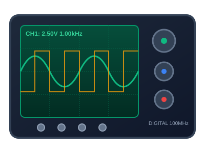
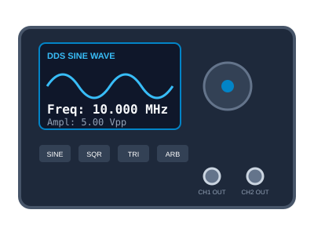
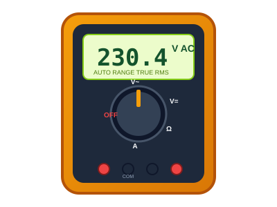
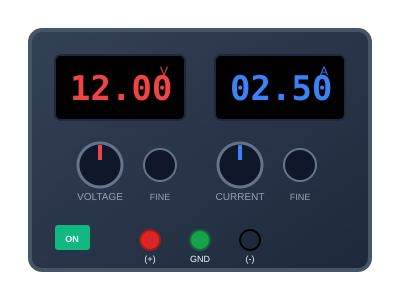
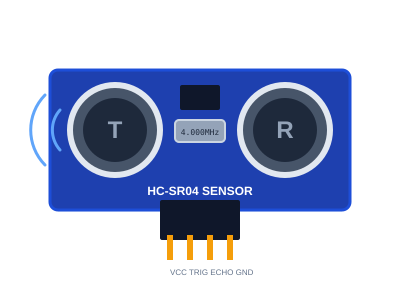
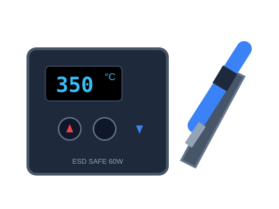

SiLab Kampus
Sistem Informasi Inventaris & Peminjaman Alat Laboratorium terintegrasi untuk mendukung kegiatan praktikum dan riset teknologi.
Lokasi & Jam Layanan
Gedung Laboratorium Terpadu, Lantai 2
(021) 789-0123 / Ext. 204
silab@kampus.ac.id
DAFTAR INVENTARIS ALAT
Setiap peralatan telah dikalibrasi dan diverifikasi kondisinya oleh Petugas Lab. Pilih alat untuk melihat spesifikasi atau mengajukan peminjaman online.

Tersedia: 6 Unit4 Channel Digital Storage Oscilloscope dengan bandwidth 100MHz, real-time sample rate 1GSa/s, dan USB logging.
Ajukan Pinjam Alat Ini
Tersedia: 4 UnitDual-channel Arbitrary Waveform Generator dengan modulasi sinyal Sinus, Kotak, Segitiga, dan Pulsa.
Ajukan Pinjam Alat Ini
Tersedia: 12 UnitPengukur presisi tinggi Auto-Ranging untuk Tegangan AC/DC, Arus hingga 10A, Hambatan, dan Kontinuitas.
Ajukan Pinjam Alat Ini
Tersedia: 8 UnitCatu daya laboratorium teregulasi linier dengan proteksi Over Voltage (OVP) dan Over Current (OCP).
Ajukan Pinjam Alat Ini
Tersedia: 25 UnitModul sensor jarak sonar non-kontak 2 cm - 400 cm untuk mikrokontroler Arduino & ESP32.
Ajukan Pinjam Alat Ini
Tersedia: 10 UnitStasiun solder digital anti-statis (ESD-safe) pengatur suhu presisi 200°C - 480°C dan dudukan keramik.
Ajukan Pinjam Alat IniSistem Informasi Inventaris & Peminjaman Alat Laboratorium terintegrasi untuk mendukung kegiatan praktikum dan riset teknologi.
Gedung Laboratorium Terpadu, Lantai 2
(021) 789-0123 / Ext. 204
silab@kampus.ac.id